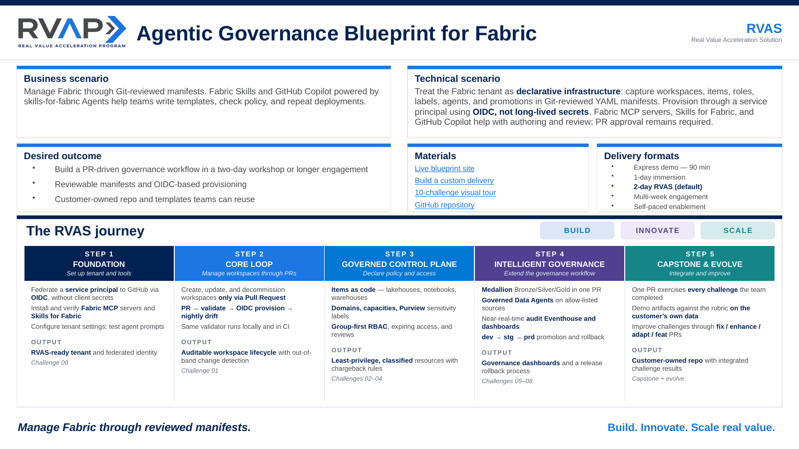

Federated identity
Provisioning uses OIDC-federated identity rather than client secrets, starting in Challenge 00.
One validator, two places
The same validate code path checks manifests locally and in CI.
Nightly drift checks
Drift checks report out-of-band portal changes as GitHub issues.
Skills assist authoring
Use Skills for Fabric to build medallion, Eventhouse, Power BI, and Activator content, then capture it in reviewed PRs.
Agent assistance, PR review
GitHub Copilot and Fabric MCP help with authoring and review. Governed changes still require a reviewed PR and service-principal provisioning.
Improve through feedback
Use customer feedback to open PRs that fix, add, or adapt challenges.
Bug or doc rot in an existing challenge — a broken link in 03, an outdated screenshot in 07.
Sharpen an existing challenge — a new policy rule in 01, clearer success criteria in 04.
A customer-specific variant kept alongside the original — a regulated-insurance take on 06.
A brand-new challenge — e.g. data-mesh federated governance for multi-domain tenants.
Every PR that adds or changes challenge content keeps the contract: each challenge demonstrates ≥ 1 MCP server and ≥ 1 Skill, and policy / schema changes need CODEOWNERS review.

- →Hands-on governance through a two-day workshop or a longer engagement.
- →Reviewable manifests and OIDC-based provisioning.
- →Customer-owned repo and templates teams can reuse.